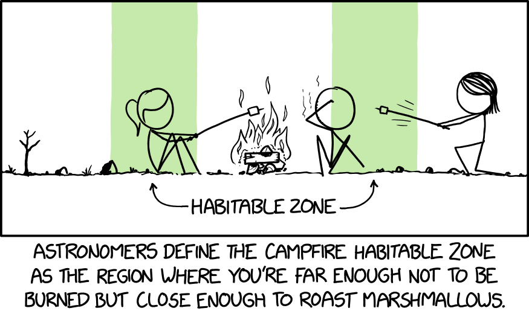

Here's an old meme as well:
April 9

Highlights
- End of the week!
- Ate some chocolate cheese cake
- Got into all of my waitlisted classes
To-Do
- Some work for my student organization
- Some more work for the lab I'm working for
- Get started on this lab (lol) as well as other PAs for next week
Song of the Day
Haven't really been exploring new music, but since 2019 I've been getting back into J-pop as well as J-rock. Here's one of my recommendations!
April 10
Highlights
- Finished student org work!
- Got first CSE 110 lab back and did well!
- Ate dinner with older brother
To-Do
- Continue work for the lab I'm working for
- Should really get started on this lab
- Maybe clean up my room a little?
Song of the Day
One artist that has come under my radar recently is Yorushika. I didn't realize it at first, but the writer of the songs used to be a vocaloid producer, so the songs sound very nostalgic to me! Anyway, here's one of their songs!
April 11

Highlights
- Ate some really good noodles for lunch
- Figured out my housing for Fall quarter!
- Got some good sleep last night
To-Do
- Finish this lab!
- Start my PA due this week
- Do what my project group has assigned so far
- Start reading Dune
Song of the Day
For a change of pace, recently I've been playing the new DLC for the roguelike game Binding of Isaac. I've been having a lot of fun and I find the ost really good! The DLC is made in collaboration with a group of modders who added tons to the game back in 2016 and here is one of the tracks in the OST!
More about Binding of Isaac

Binding of Isaac is a top down game where you play as a character who has to clear a series of floors. Every run is a new surprise as the levels are procedurally generated. It's made by Edmund Mcmillen, who is also know for other games such as Super Meat Boy and End is Nigh. If you enjoy roguelike games and haven't played Isaac, I would highly recommend it as it is regarded as one of the classics in the genre.